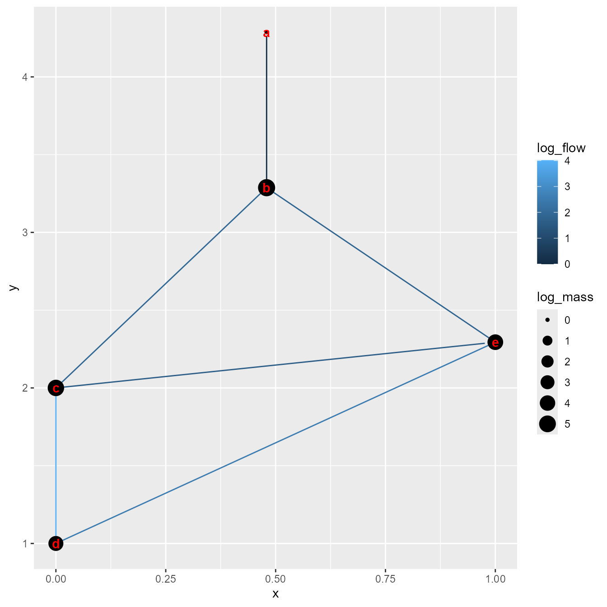

Eastern Bering Sea case study
James Thorson
Source:vignettes/eastern_bering_sea.Rmd
eastern_bering_sea.Rmdecostate is an R package for fitting the mass-balance
dynamics specified by EcoSim as a state-space model. We here demonstrate
how it can be fitted to a real-world data set including 10 functional
groups and 1 detritus pool, using data across four trophic levels and
representing both pelagic and demersal energy pathways.
Eastern Bering Sea
We first load the Survey, Catch,
PB, and QB values, and define other biological
inputs:
# load data
data(eastern_bering_sea)
# Reformat inputs
years = 1982:2021 # Catch only goes through 2021, and starting pre-data in 1982 doesn't play well with fit_B0
taxa = c( "Pollock", "Cod", "Arrowtooth", "Copepod", "Other_zoop", "Chloro", "NFS", "Krill", "Benthic_invert", "Benthos", "Detritus" )
# Define types
type_i = sapply( taxa, FUN=switch, "Detritus" = "detritus",
"Chloro" = "auto",
"hetero" )
# Starting values
U_i = EE_i = B_i = array( NA, dim=length(taxa),
dimnames=list(names(eastern_bering_sea$P_over_B)))
B_i[c("Cod", "Arrowtooth", "NFS")] = c(1, 0.5, 0.02)
EE_i[] = 1
U_i[] = 0.2
# Define default vulnerability, except for primary producers
X_ij = array( 2, dim=c(length(taxa),length(taxa)) )
dimnames(X_ij) = list(names(B_i),names(B_i))
X_ij[,'Chloro'] = 91We then fit the function call. This is very slow:
# Define parameters to estimate
fit_Q = c("Pollock", "Copepod", "Chloro", "Other_zoop", "Krill")
fit_B0 = c("Pollock", "Cod", "Arrowtooth", "NFS")
fit_B = c("Cod", "Arrowtooth", "NFS")
# Define process errors to estimate
# Only estimating Pollock to speed up demonstration
fit_eps = "Pollock"
# Which taxa to include
taxa_to_include = c( "NFS", "Pollock", "Copepod", "Chloro", "Krill" )
# To run full model use:
# taxa_to_include = taxa
# Run model
out = ecostate( taxa = taxa_to_include,
years = years,
catch = eastern_bering_sea$Catch,
biomass = eastern_bering_sea$Survey,
PB = eastern_bering_sea$P_over_B,
QB = eastern_bering_sea$Q_over_B,
DC = eastern_bering_sea$Diet_proportions,
B = B_i,
EE = EE_i,
U = U_i,
type = type_i,
X = X_ij,
fit_B = fit_B,
fit_Q = fit_Q,
fit_eps = fit_eps,
fit_B0 = fit_B0,
control = ecostate_control( n_steps = 20, # using 15 by default
start_tau = 0.01,
tmbad.sparse_hessian_compress = 0 ))
# print output
out
#> Dynamics integrated using ABM with 20 time-steps
#> Run time: Time difference of 3.688347 mins
#> Negative log-likelihood: 110.8242
#>
#> EcoSim parameters:
#> type QB PB B EE U
#> NFS hetero 57.763550 0.09429851 0.01610613 0 0.2
#> Pollock hetero 4.225892 0.82452074 3.26791790 1 0.2
#> Copepod hetero 27.740000 6.00000000 1.85304306 1 0.2
#> Chloro auto NA 99.40685006 0.63415347 1 0.2
#> Krill hetero 15.640000 5.48000000 1.05396595 1 0.2
#>
#> EcoSim diet matrix:
#> Predator
#> Prey NFS Pollock Copepod Chloro Krill
#> NFS 0 0.0000000 0 0 0.0000000
#> Pollock 1 0.1277434 0 0 0.0000000
#> Copepod 0 0.4540243 0 0 0.2941176
#> Chloro 0 0.0000000 1 0 0.7058824
#> Krill 0 0.4182324 0 0 0.0000000
#>
#> EcoSim vulnerability matrix:
#> NFS Pollock Copepod Chloro Krill
#> NFS 2 2 2 91 2
#> Pollock 2 2 2 91 2
#> Copepod 2 2 2 91 2
#> Chloro 2 2 2 91 2
#> Krill 2 2 2 91 2
#>
#> Estimates: sdreport(.) result
#> Estimate Std. Error
#> delta_i -0.9112170 0.07451987
#> delta_i -0.9721216 0.10271052
#> logB_i -4.1285552 0.05717952
#> logtau_i -1.1372673 0.14316381
#> logq_i 0.9286230 0.05601754
#> logq_i 0.9999230 0.06783386
#> logq_i 2.6846407 0.05952428
#> logq_i 2.3981400 0.07601978
#> Maximum gradient component: 9.811169e-05We can then plot the estimated foodweb:
# Plot foodweb at equilibrium
# using pelagic producers as x-axis and trophic level as y-axis
plot_foodweb( out$rep$out_initial$Qe_ij,
xtracer_i = ifelse(taxa_to_include=="Krill",1,0),
B_i = out$rep$out_initial$B_i,
type_i = type_i[taxa_to_include] )
#> Warning: Removed 4 rows containing missing values or values outside the scale range
#> (`geom_point()`).